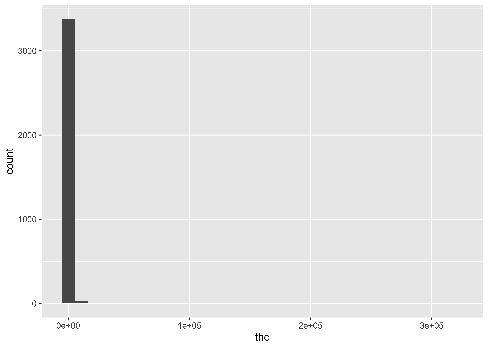
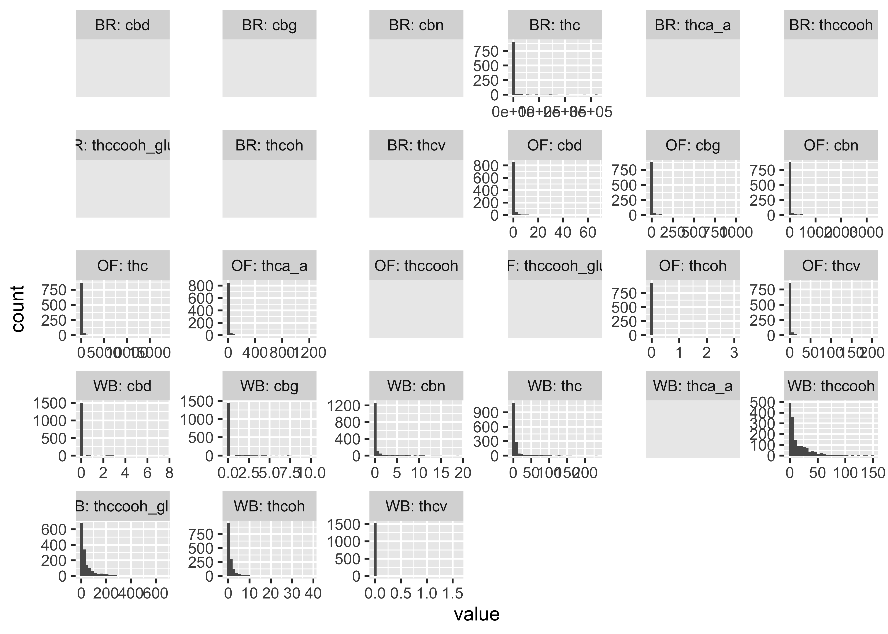
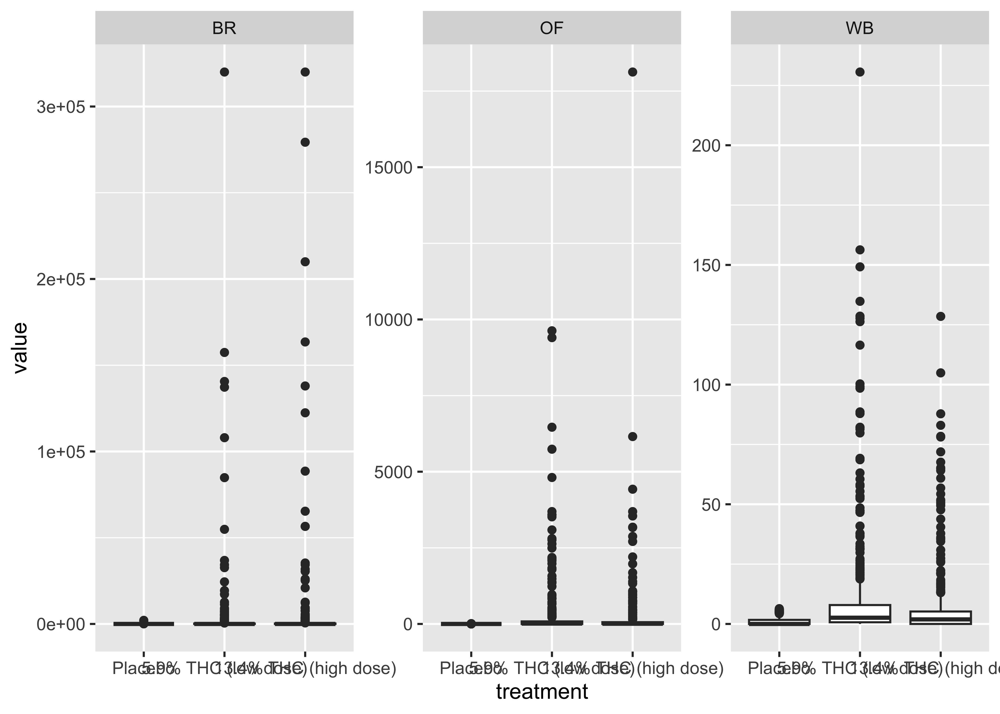
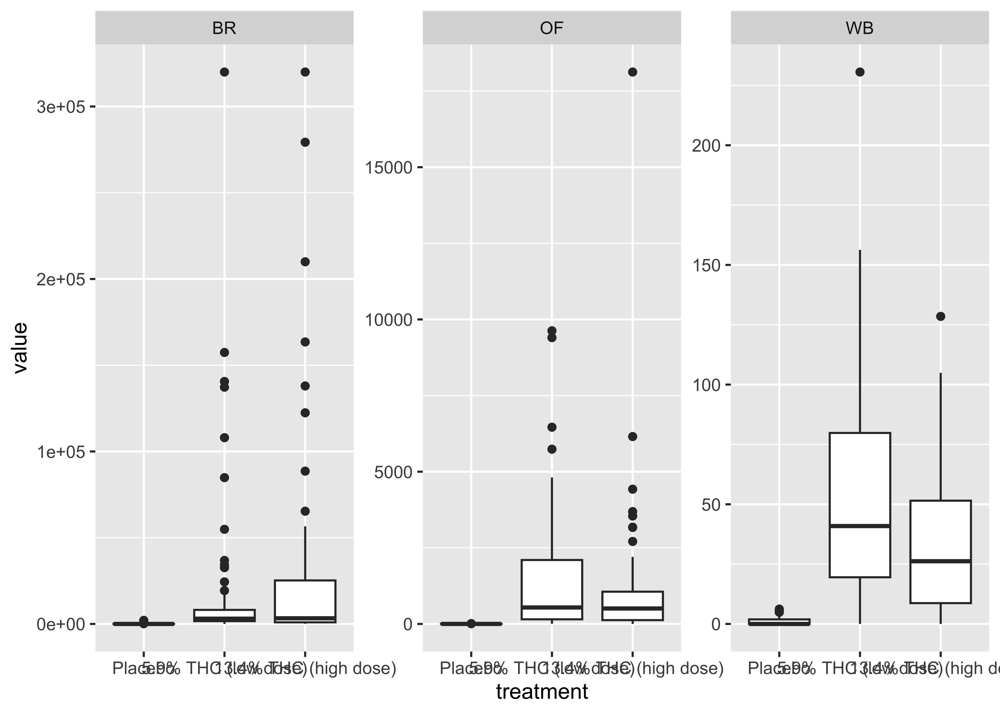
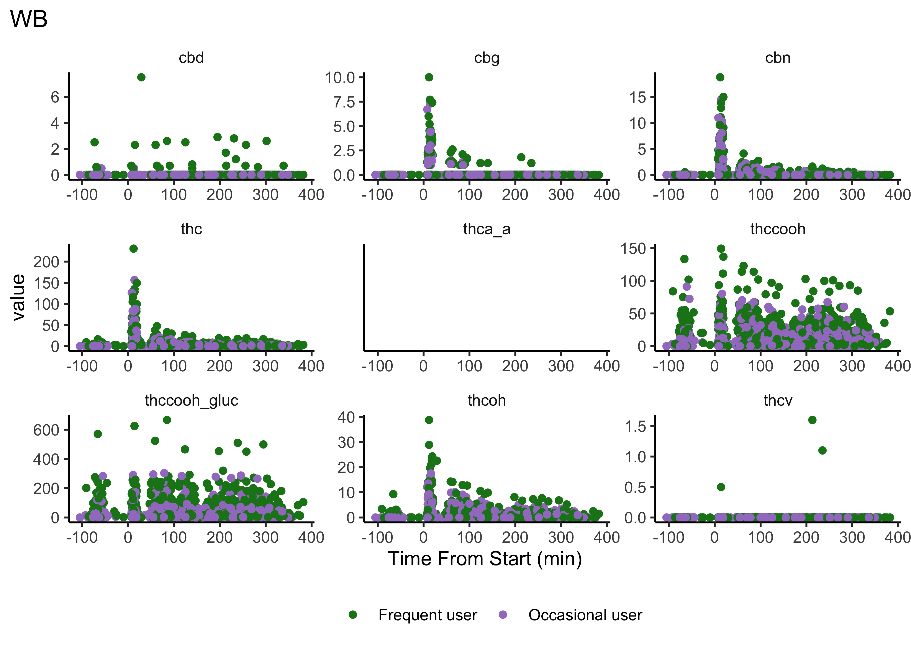
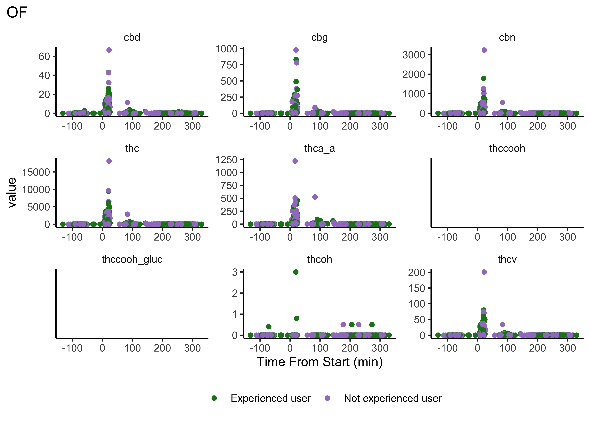
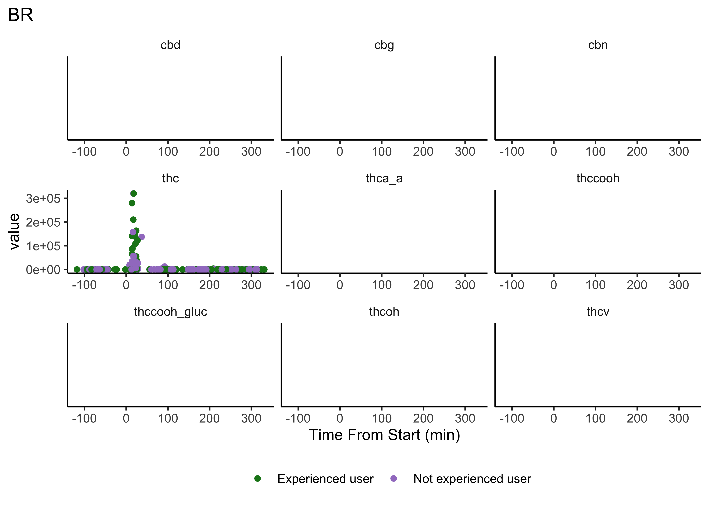
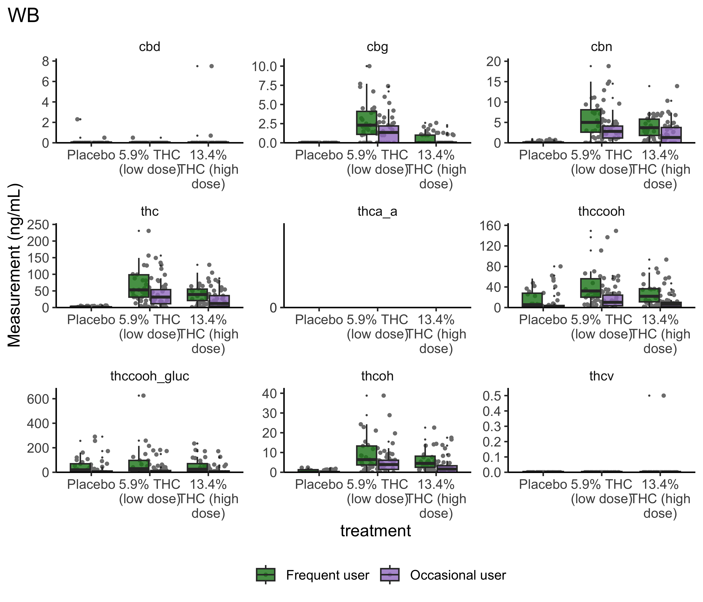
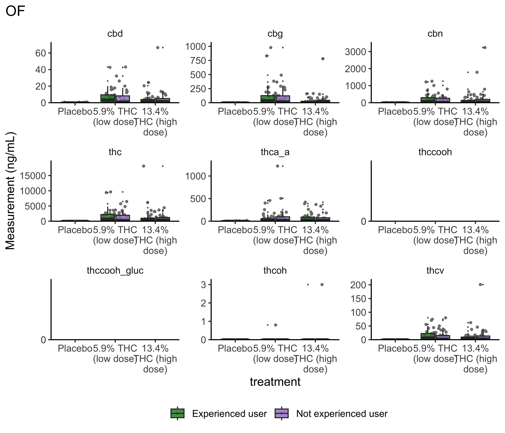
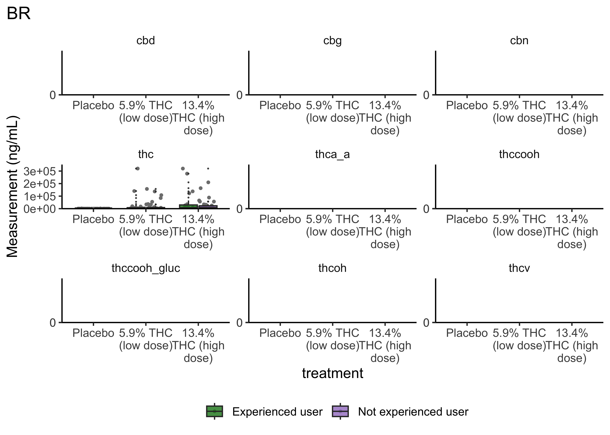

cs01_data <- read_csv("data/cs01_combined.csv") |>
mutate(treatment = fct_relevel(treatment, "Placebo", "5.9% THC (low dose)"))06-cs01-eda
CS01: Biomarkers of Recent Use (EDA)
Q&A
Q: I’m slightly confused about the purpose of this line of code: facet_grid(treatment ~ group) when using facets
A:facet_gridsays to create a small multiple plot - meaning break down the overall plot into smaller subsets. Thentreatment ~ groupspecifies how to do that breakdown. Have each row be a separatetreatment. Have each column be a separategroup. Then, in each sublot, plot only the data that pertains to taht treatment x group combination.
Q: For things we want to alter that are not in ggplot, would we use a different package in combination with ggplot to alter things?
A: Yup! There are TONS of extensions/add-ons that work well withggplot2. Many are found in additional pacakges, so I’d start there. There is, additionally, plotting in R that happens outside of or is incompatible withggplot2. There are times where you would want to go that route, but we won’t need to in this course.
Q: I am a little confused on how to select the best practices. Are there multiple right answers at times?
A: There are multiple “right” answers. Learn the basics about visual design and then decide in your case which of those rules to follow. It will often be all of them, but if a rule makes reading your particular visualization more difficult to follow, then break the rule in that case. The goal is clear communication and readability.
Q: My lingering question is if there is support for violin plots.
A: Yes! There is a geom for that:geom_violin
Q: What I should be looking for/investigating from the case study data
A: Ultimately, you and your group want to answer the question posed. We’ll discuss more about this today!
Q: I’ve also used forestplot. Is this something that ggplot can also accomplish?
A: Yup! There are standalone packages (not ggplot2-compatible) for this, but it’s also possible in `ggplot2.
Course Announcements
Due Dates:
- üî¨ Lab 03 due Thursday (10/24; 11:59 PM)
- üíª HW02 (Viz) due Mon (10/28; 11:59 PM)
- üìã Lecture Participation survey ‚Äúdue‚Äù after class
Notes:
- hw01 and lab02 scores posted; Scores on Canvas; feedback as “issue” on GH
- CS01 Groups have been sent out
- email for contact
- GitHub repo <- please accept and open; make sure you have access; (or try: https://github.com/GHUsername/cs01-fa24-team##/invitations)
- group mate feedback is required (on submission)
. . .
Important
The CS01 data are data for you only. My collaborator is excited that y’all will be working on this…but these are still research data, so please do not share with others or post publicly.
Suggested Reading
Agenda
- CS01
- Instructions
- Previous Projects
- CS01 EDA
tidyr- Exploratory Data Analysis (EDA)
CS01
CS01 Instructions
Instructions are on course website.
Note:
- Deliverables: Full report (.html) + general communication
- Common Deductions
Example Case Study
See & Discuss: https://cogs137-fa24.github.io/cogs137-fa24/content/cs/cs01.html
Feedback & Scores
Feedback to other students here
You cannot see the projects, but can read all of the comments and see the associated score. Also, note that the same row is not the same group.
. . .
Common comments:
- context/explanation/guidance/lacking
- missing citations
- failure to introduce/describe the data
- making statements without evidence
- need to edit for cohesiveness, story, clarity
An (Example) Rubric
This is NOT the rubric for your case study, but it will be similar:

Notes
- Lots of code/plots will be provided here
- You are free to include any of it in your own case study (no attribution needed)
- You probably should NOT include all of them in your final report
- For any of the “basic” plots you include in your report, you’ll want to clean them up/improve their design.
- Your final report should be polished from start to finish
Data Wrangling: tidyr
- pivots (
tidyr) - joins (
dplyr)
Reminder: Tidy Data

. . .

. . .

Pivoting
Storing the same data in a different format
. . .
long vs. wide
- wide data contains values that do not repeat in the first column. (analysis; storage)
- long format contains values that do repeat in the first column. (plotting)
pivots
pivot_longer| take wide data and make it longpivot_wider| take long data and make it wide
Joins
Combining data across different datasets, using common information (often: IDs)
. . .
Mutating Joins
add new variables to a data frame from matching observations in another
. . .
left_join: keeps all rows in first df; adds all matching information from second df; adds NAs for any observations missing informationright_join: keeps all observations in second dffull_join: keeps all observations in either df
. . .

. . .
inner_join: takes only rows in both dfs

Binding dataframes
bind_rows()- stack different dataframes on top of one another, combining information where column names are the same <- what I used to combine the three datasets after wranglingbind_cols()- stack dataframes next to one another; will assume rows match up <- use with caution
Exploratory Data Analysis (EDA)
EDA
The process of really getting to “know” your data:
- calculating descriptive statistics (min, mean, median, max, etc.)
- univariate plots (histograms, densityplots, barplots) - distributions of single variables
- bivariate plots (scatterplots, boxplots) - relationships between variables
. . .
Notes:
- Not every plot you generate in this process has to end up in your final report, but each plot should help you learn
- Every plot should NOT be beautiful. Save that time for the ones you ultimately use to communicate your findings
- There is NOT a formula for carrying out EDA. You stop once you understand your data fully.
- Lab03 is to get you started. Three plots is probably not enough for you to be fully comfortable with these data.
Data & Files
Question
Which compound, in which matrix, and at what cutoff is the best biomarker of recent use?
Our Datasets
Three matrices:
- Blood (WB): 8 compounds; 190 participants
- Oral Fluid (OF): 7 compounds; 192 participants
- Breath (BR): 1 compound; 191 participants
. . .
Variables:
ID| participants identifierTreatment| placebo, 5.90%, 13.40%Group| Occasional user, Frequent userTimepoint| indicator of which point in the timeline participant’s collection occurredtime.from.start| number of minutes from consumption- & measurements for individual compounds
The Data
Reading in the csv provided in lab03/cs01:
CS01: EDA
Single Variable (basic) plots
For a single compound…
ggplot(cs01_data, aes(x=thc)) +
geom_histogram()
. . .
But, we have three different matrices…
ggplot(cs01_data, aes(x=thc)) +
geom_histogram() +
facet_wrap(~fluid_type)
But what if we consider our experiment/the structure of our data? We have three different matrices…and a whole bunch of compounds. With wide data, it’s not easy to plot these distributions, so you may want to pivot those data….
cs01_long <- cs01_data |>
select(1:5,time_from_start,everything()) |>
pivot_longer(7:15) . . .
Distributions across all compounds:
ggplot(cs01_long, aes(x=value)) +
geom_histogram() +
facet_wrap(~name)
…but this still doesn’t get at the differences between matrices and compound.
. . .
Plotting some of these data…
cs01_long |>
mutate(group_compound=paste0(fluid_type,": ", name)) |>
ggplot(aes(x=value)) +
geom_histogram() +
facet_wrap(~group_compound, scales="free")
THC & Frequency
cs01_long |>
filter(name=="thc") |>
ggplot(aes(x=group, y=value)) +
geom_boxplot() +
facet_wrap(~fluid_type, scales="free")
THC & Treatment Group
cs01_long |>
filter(name=="thc") |>
ggplot(aes(x=treatment, y=value)) +
geom_boxplot() +
facet_wrap(~fluid_type, scales="free")
Focus on a specific timepoint…
cs01_long |>
filter(name=="thc", (timepoint=="0-30 min" | timepoint=="0-40 min")) |>
ggplot(aes(x=treatment, y=value)) +
geom_boxplot() +
facet_wrap(~fluid_type, scales="free")
At this point…
We start to get a sense of the data with these quick and dirty plots, but we’re really only scratching the surface of what’s going on in these data.
. . .
These data require a lot of exploration due to the number of compounds, multiple matrices, and data over time aspects.
Brief Aside: User-Defined Functions
You should consider writing a function whenever you’ve copied and pasted a block of code more than twice -Hadley
function_name <- function(input){
# operations using input
}. . .
For example…
double_value <- function(val){
val * 2
}. . .
To use/execute:
double_value(3)[1] 6Additional resource: https://r4ds.hadley.nz/functions
Compounds across time
Our first user-defined function:
plot_scatter_time <- function(matrix) {
cs01_long |>
filter(!is.na(time_from_start), fluid_type==matrix) |>
ggplot(aes(x=time_from_start, y=value, color=group)) +
geom_point() +
facet_wrap(~name, scales="free") +
scale_color_manual(values=c("#19831C", "#A27FC9")) +
theme_classic() +
labs(title=matrix,
x="Time From Start (min)") +
theme(legend.position="bottom",
legend.title=element_blank(),
strip.background=element_blank(),
plot.title.position="plot")
}plot_scatter_time(matrix="WB")
plot_scatter_time(matrix="OF")
plot_scatter_time(matrix="BR")
- We do NOT have clear delineations in time
- This means there could be multiple measurements from a single individual within a specified timepoint (i.e. “0-30 min”)
- We wouldn’t want to include duplicate measures from the same individual within timepoint
- We wouldn’t have known this without looking at our data…why EDA is necessary
Dropping Duplicates (w/n time window)
cs01_nodups <- cs01_data |>
filter(!is.na(timepoint)) |>
group_by(fluid_type, timepoint) |>
distinct(id, .keep_all=TRUE) |>
ungroup(). . .
Now to pivot_longer that…
cs01_nodups_long <- cs01_nodups |>
select(1:5,time_from_start,everything()) |>
pivot_longer(7:15)
Note
While I drop duplicates after making the plots above, you and your group will want to think about when it should be done for telling the clearest story. The order we do things in EDA is not typically the order in which we communicate information.
Group Differences: Frequency of Use
boxplot_frequency_of_use <- function(matrix){
cs01_nodups_long |>
filter(fluid_type == matrix,
timepoint == "0-30 min" | timepoint == "0-40 min") |>
ggplot(aes(x=group, y=value, fill=group)) +
geom_jitter(position=position_jitter(width=.3,
height=0),
size=0.8,
color="gray50") +
geom_boxplot(outlier.shape=NA, alpha=0.6) +
facet_wrap(~name, scales="free") +
scale_x_discrete(labels=function(x) str_wrap(x, width=10)) +
scale_y_continuous(limits=c(0, NA),
expand=expansion(mult=c(0, 0.1))) +
scale_fill_manual(values=c("#19831C", "#A27FC9")) +
theme_classic() +
labs(title=paste0(matrix)) +
theme(text=element_text(size=12),
legend.position="bottom",
legend.title=element_blank(),
panel.grid=element_blank(),
plot.title.position="plot",
strip.background=element_blank())
}boxplot_frequency_of_use("WB")
boxplot_frequency_of_use("OF")
boxplot_frequency_of_use("BR")
- Certain compounds show different values between frequent and infrequent users. Worth considering what that means for our ultimate goal
- Breath at this first timepoint likely not very helpful…what about other timepoints?
Group Differences: Treatment
boxplot_treatment <- function(matrix){
cs01_nodups_long |>
filter(fluid_type == matrix,
timepoint == "0-30 min" | timepoint == "0-40 min") |>
ggplot(aes(x=treatment, y=value, fill=group)) +
geom_jitter(position=position_jitter(width=.3,
height=0),
size=0.8,
color="gray50") +
geom_boxplot(outlier.size=0.1, alpha=0.8) +
facet_wrap(~name, scales="free") +
scale_x_discrete(labels = function(x) str_wrap(x, width = 10)) +
scale_y_continuous(limits=c(0, NA),
expand=expansion(mult=c(0, 0.1))) +
scale_fill_manual(values=c("#19831C", "#A27FC9")) +
theme_classic() +
labs(title=paste0(matrix), y="Measurement (ng/mL)") +
theme(text=element_text(size=12),
legend.position="bottom",
legend.title=element_blank(),
panel.grid=element_blank(),
plot.title.position="plot",
strip.background=element_blank())
}boxplot_treatment("WB")
boxplot_treatment("OF")
boxplot_treatment("BR")
- Argument for combining treatment groups?
- We now have very similar
ggplot2code across a few plots. This can be improved usingtheme_set(). You set theme parameters at top of Rmd…and then those will apply across all plots. - These last two sets of plots have only focused on that first timepoint. You’ll probably want to look beyond that.
Some Metrics
Sensitivity & Specificity
Sensitivity | the ability of a test to correctly identify patients with a disease/trait/condition. \[TP/(TP + FN)\]
. . .
Specificity | the ability of a test to correctly identify people without the disease/trait/condition. \[TN/(TN + FP)\]
. . .
❓ For this analysis, do you care more about sensitivity? about specificity? equally about both?
What is a TP here? TN? FP? FN?
Post-smoking (cutoff > 0)
- TP = THC group, value >= cutoff
- FN = THC group, value < cutoff
- FP = Placebo group, value >= cutoff
- TN = Placebo group, value < cutoff
. . .
Post-smoking (cutoff == 0)
Cannot be a TP or FP if zero…
- TP = THC group, value > cutoff),
- FN = THC group, value <= cutoff),
- FP = Placebo group, value > cutoff),
- TN = Placebo group, value < cutoff)
. . .
Pre-smoking
Cannot be a TP or FN before consuming…
- TP = 0
- FN = 0
- FP = value >= cutoff
- TN = value < cutoff
The Code to come
Warning
This is beyond code I would expect you all to be able to write yourself. It’s here so that 1) you can make these calculations and interpret the results, 2) because we have a wide range of background and experience. I want everyone to get as much as they can out of this course, and 3) I do want you all to talk to one another. That’s one reason you all are in groups for case studies.
Calculating Sensitivity and Specificity
make_calculations <- function(dataset, cutoff, compound, timepoint_use){
## remove NAs
df <- dataset |>
select(treatment, {{ compound }}, timepoint) |>
filter(timepoint == timepoint_use, !is.na({{ compound }}))
if(nrow(df)>0){
if(timepoint_use == "pre-smoking"){
output <- df |>
summarize(TP = 0,
FN = 0,
FP = sum(!!sym(compound) >= cutoff),
TN = sum(!!sym(compound) < cutoff))
}else{
if(cutoff == 0){
output_pre <- df |>
filter(timepoint_use == "pre-smoking") |>
summarize(TP = 0,
FN = 0,
FP = sum(!!sym(compound) >= cutoff),
TN = sum(!!sym(compound) < cutoff))
output <- df |>
filter(timepoint_use != "pre-smoking") |>
summarize(TP = sum(treatment != "Placebo" & !!sym(compound) > cutoff),
FN = sum(treatment != "Placebo" & !!sym(compound) <= cutoff),
FP = sum(treatment == "Placebo" & !!sym(compound) > cutoff),
TN = sum(treatment == "Placebo" & !!sym(compound) < cutoff))
output <- output + output_pre
}else{
output_pre <- df |>
filter(timepoint_use == "pre-smoking") |>
summarise(TP = 0,
FN = 0,
FP = sum(!!sym(compound) >= cutoff),
TN = sum(!!sym(compound) < cutoff))
output <- df |>
filter(timepoint_use != "pre-smoking") |>
summarise(TP = sum(treatment != "Placebo" & !!sym(compound) >= cutoff),
FN = sum(treatment != "Placebo" & !!sym(compound) < cutoff),
FP = sum(treatment == "Placebo" & !!sym(compound) >= cutoff),
TN = sum(treatment == "Placebo" & !!sym(compound) < cutoff))
output <- output + output_pre
}
}
# clean things up; make calculations on above values
output <- output |>
mutate(detection_limit = cutoff,
compound = compound,
time_window = timepoint_use,
NAs = nrow(dataset) - nrow(df),
N = nrow(dataset),
Sensitivity = (TP/(TP + FN)),
Specificity = (TN /(TN + FP)),
PPV = (TP/(TP+FP)),
NPV = (TN/(TN + FN)),
Efficiency = ((TP + TN)/(TP + TN + FP + FN))*100
)
return(output)
}
}
Note
\{{ compound }\} is used to refer to the argument stored in the compound parameter; !!sym(compound) is used to dynamically refer to the column whose name is stored in compound. sym() converts the string in compound into a symbol that refers to the column, and !! unquotes it to evaluate the column in the expression.
Map the above for each matrix…
sens_spec_cpd <- function(dataset, cpd, timepoints){
args2 <- list(start = timepoints$start,
stop = timepoints$stop,
tpt_use = timepoints$timepoint)
out <- args2 |>
pmap_dfr(make_calculations, dataset, compound = cpd)
return(out)
}- determine what cutoff values to try
- carry out above function on those cutoffs
Calculate
Reminder: Currently, states have laws on the books from zero tolerance (detection of any level) to 5ng/mL THC
# specify which calculations to make
cutoffs <- c(0.5, 1, 2, 5, 10)
compounds <- cs01_nodups_long |> filter(fluid_type=="WB") |> filter(!is.na(value)) |> distinct(name) |> pull(name)
WB_timepoints <- c("pre-smoking","0-30 min","31-70 min", "71-100 min","101-180 min","181-210 min", "211-240 min","241-270 min", "271-300 min", "301+ min")
WB <- cs01_data |> filter(fluid_type=="WB")
# Specify all parameter combinations
param_grid <- expand.grid(
cutoffs = cutoffs,
compounds = compounds,
timepoint_use = WB_timepoints)
# Calculate for all cutoff-compound-timepoint combinations
WB_ss <- purrr::pmap_dfr(param_grid, ~ make_calculations(dataset=WB, cutoff = ..1, compound = as.character(..2), timepoint_use = ..3))
WB_ss# A tibble: 400 × 14
TP FN FP TN detection_limit compound time_window NAs N
<dbl> <dbl> <int> <int> <dbl> <chr> <fct> <int> <int>
1 0 0 1 188 0.5 cbn pre-smoking 1336 1525
2 0 0 0 189 1 cbn pre-smoking 1336 1525
3 0 0 0 189 2 cbn pre-smoking 1336 1525
4 0 0 0 189 5 cbn pre-smoking 1336 1525
5 0 0 0 189 10 cbn pre-smoking 1336 1525
6 0 0 4 185 0.5 cbd pre-smoking 1336 1525
7 0 0 1 188 1 cbd pre-smoking 1336 1525
8 0 0 1 188 2 cbd pre-smoking 1336 1525
9 0 0 0 189 5 cbd pre-smoking 1336 1525
10 0 0 0 189 10 cbd pre-smoking 1336 1525
# ℹ 390 more rows
# ℹ 5 more variables: Sensitivity <dbl>, Specificity <dbl>, PPV <dbl>,
# NPV <dbl>, Efficiency <dbl># specify which calculations to make
cutoffs <- c(0.5, 1, 2, 5, 10)
compounds <- cs01_nodups_long |> filter(fluid_type=="OF") |> filter(!is.na(value)) |> distinct(name) |> pull(name)
OF_timepoints <- c("pre-smoking","0-30 min","31-90 min",
"91-180 min", "181-210 min", "211-240 min",
"241-270 min", "271+ min")
OF <- cs01_data |> filter(fluid_type=="OF")
# Specify all parameter combinations
param_grid <- expand.grid(
cutoffs = cutoffs,
compounds = compounds,
timepoint_use = OF_timepoints)
# Calculate for all cutoff-compound-timepoint combinations
OF_ss <- purrr::pmap_dfr(param_grid, ~ make_calculations(dataset=OF, cutoff = ..1, compound = as.character(..2), timepoint_use = ..3))
OF_ss# A tibble: 210 × 14
TP FN FP TN detection_limit compound time_window NAs N
<dbl> <dbl> <int> <int> <dbl> <chr> <fct> <int> <int>
1 0 0 5 187 0.5 cbn pre-smoking 761 953
2 0 0 1 191 1 cbn pre-smoking 761 953
3 0 0 1 191 2 cbn pre-smoking 761 953
4 0 0 1 191 5 cbn pre-smoking 761 953
5 0 0 0 192 10 cbn pre-smoking 761 953
6 0 0 4 188 0.5 cbd pre-smoking 761 953
7 0 0 1 191 1 cbd pre-smoking 761 953
8 0 0 1 191 2 cbd pre-smoking 761 953
9 0 0 0 192 5 cbd pre-smoking 761 953
10 0 0 0 192 10 cbd pre-smoking 761 953
# ℹ 200 more rows
# ℹ 5 more variables: Sensitivity <dbl>, Specificity <dbl>, PPV <dbl>,
# NPV <dbl>, Efficiency <dbl># specify which calculations to make
cutoffs <- c(0.5, 1, 2, 5, 10)
compounds <- cs01_nodups_long |> filter(fluid_type=="BR") |> filter(!is.na(value)) |> distinct(name) |> pull(name)
BR_timepoints <- c("pre-smoking","0-40 min","41-90 min",
"91-180 min", "181-210 min", "211-240 min",
"241-270 min", "271+ min")
BR <- cs01_data |> filter(fluid_type=="BR")
# Specify all parameter combinations
param_grid <- expand.grid(
cutoffs = cutoffs,
compounds = compounds,
timepoint_use = OF_timepoints)
# Calculate for all cutoff-compound-timepoint combinations
BR_ss <- purrr::pmap_dfr(param_grid, ~ make_calculations(dataset=BR, cutoff = ..1, compound = as.character(..2), timepoint_use = ..3))
BR_ss# A tibble: 25 × 14
TP FN FP TN detection_limit compound time_window NAs N
<dbl> <dbl> <int> <int> <dbl> <chr> <fct> <int> <int>
1 0 0 6 185 0.5 thc pre-smoking 758 949
2 0 0 6 185 1 thc pre-smoking 758 949
3 0 0 6 185 2 thc pre-smoking 758 949
4 0 0 6 185 5 thc pre-smoking 758 949
5 0 0 6 185 10 thc pre-smoking 758 949
6 24 66 0 30 0.5 thc 91-180 min 829 949
7 24 66 0 30 1 thc 91-180 min 829 949
8 24 66 0 30 2 thc 91-180 min 829 949
9 24 66 0 30 5 thc 91-180 min 829 949
10 24 66 0 30 10 thc 91-180 min 829 949
# ℹ 15 more rows
# ℹ 5 more variables: Sensitivity <dbl>, Specificity <dbl>, PPV <dbl>,
# NPV <dbl>, Efficiency <dbl>Plot Results
Note: requires library(patchwork)
plot_cutoffs <- function(dataset, timepoint_use_variable, tissue, cpd){
# control colors and lines used in plots
col_val = c("#D9D9D9", "#BDBDBD", "#969696", "#636363", "#252525")
lines = rep("solid", 5)
# prep data
df_ss <- dataset |>
filter(compound == cpd) |>
mutate(time_window = fct_relevel(as.factor(time_window), levels(timepoint_use_variable)),
detection_limit = as.factor(detection_limit),
Sensitivity = round(Sensitivity*100, 0),
Specificity = round(Specificity*100, 0))
# plot sensitivity
p1 <- df_ss |>
ggplot(aes(x = time_window, y = Sensitivity,
color = detection_limit)) +
geom_line(linewidth = 1.2, aes(group = detection_limit,
linetype = detection_limit)) +
geom_point(show.legend=FALSE) +
ylim(0,100) +
scale_x_discrete(labels = function(x) str_wrap(x, width = 5)) +
scale_linetype_manual(values=lines) +
scale_color_manual(values = col_val, name = "Cutoff \n (ng/mL)",
guide = guide_legend(override.aes = list(linetype = c(1),
shape = rep(NA, length(lines))) )) +
theme_classic() +
theme(plot.title.position = "plot",
axis.title = element_text(size=14),
axis.text = element_text(size=10),
legend.position = "none",
panel.grid = element_blank(),
strip.background = element_blank()
) +
guides(linetype = "none") +
labs(x = "Time Window (min)",
y = "Sensitivity",
title = paste0(tissue,": ", toupper(cpd)) )
# plot specificity
p2 <- df_ss |>
ggplot(aes(x = time_window, y = Specificity,
group = detection_limit,
color = detection_limit,
linetype = detection_limit)) +
geom_line(linewidth = 1.2) +
geom_point() +
ylim(0,100) +
scale_color_manual(values = col_val) +
scale_x_discrete(labels = function(x) str_wrap(x, width = 5)) +
scale_linetype_manual(values = lines,
guide = guide_legend(override.aes = list(linetype = "solid",
shape = rep(NA, length(lines))) )) +
theme_classic() +
theme(axis.title = element_text(size=14),
axis.text = element_text(size=10),
legend.position = c(0.35, 0.25),
panel.grid = element_blank(),
strip.background = element_blank()) +
labs(x = "Time Window",
y = "Specificity",
title = "" )
# combine plots (uses patchwork)
p1 + p2
}plot_cutoffs(dataset=WB_ss,
timepoint_use_variable=WB$timepoint,
tissue="Blood",
cpd="thc")plot_cutoffs(dataset=OF_ss,
timepoint_use_variable=OF$timepoint,
tissue="Oral Fluid",
cpd="thc")plot_cutoffs(dataset=BR_ss,
timepoint_use_variable=BR$timepoint,
tissue="Breath",
cpd="thc")- This is only THC
- For five semi-random cutoffs
- There are other compounds and other cutoffs to consider
Possible Extensions
Our current question asks for a single compound…and you’ll need to decide that.
. . .
…but you could imagine a world where more than one compound or more than one matrix could be measured at the roadside.
. . .
So:
- combination of the oral fluid and blood that would better predict recent use? (For example if an officer stopped a driver and got a high oral fluid, but could not get a blood sample for a couple of hours and got a relatively low result would this predict recent use better than blood (or OF) alone?
- Is there a ratio of OF/blood that predicts recent use?
- Machine learning model to determine optimal combination of measurements/cutoffs to detect recent use?
. . .
Things to keep in mind:
- some matrices are easier to get at the roadside
- time from use matters (trying to detect recent use)
- we may not care equally about sensitivity and specificity
cs01: what to do now?
- Communicate with your group!
- Discuss possible extensions
- Make a plan; figure out who’s doing what; set deadlines
- Implement the plan!
What has to be done:
- Question | include in Rmd; add extension if applicable
- Background | summarize and add to what was discussed in classed
- Data
- Describe data & variables
- Data wrangling | likely copy + paste from notes/lab; add explanation as you go
- Analysis
- EDA | likely borrowing parts from notes and modifying/adding more in to tell your story; be sure to include interpretations of output & guide the reader
- Drawing conclusions to answer the question
- Extension | must be completed
- Discussion & Conclusion | summarize; discuss limitations
- Proofread | ensure it makes sense from top to bottom
- General Audience communication (submit on Canvas; 1 submission per group)
Important
Avoid the temptation to assign “Analysis” to one group member. You’ll all likely have to contribute here.
Collaborating on GitHub
- Be sure to pull changes every time you sit down to work
- Avoid working on the same part of the same file as another teammate OR work in separate files and combine at the end
- push your changes once you’re ready to add them to the group
Recap
- Can you explain/describe the plots generated in the context of these data?
- Can you generate EDA plots of your own for these data
- Can you understand/work through the more complicated code provided (even if you couldn’t have come up with it on your own)
- Can you describe sensitivity? Specificity?
- Can you explain how TP, TN, FP, and FN were calculated/defined in this experiment?
- Can you describe the code used to carry out the calculations?
- Can you interpret the results from these data?